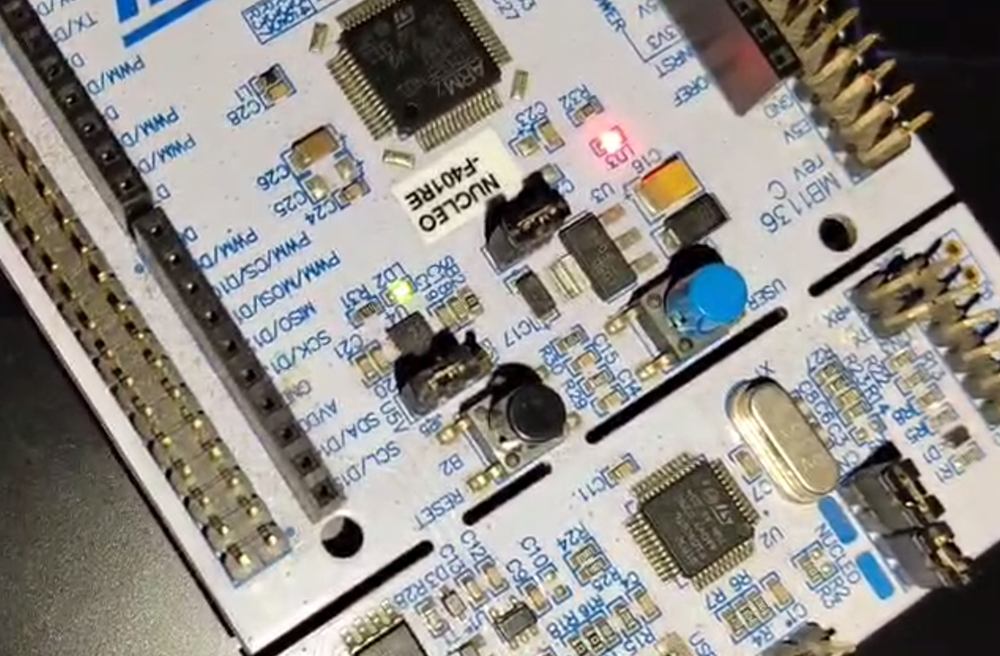
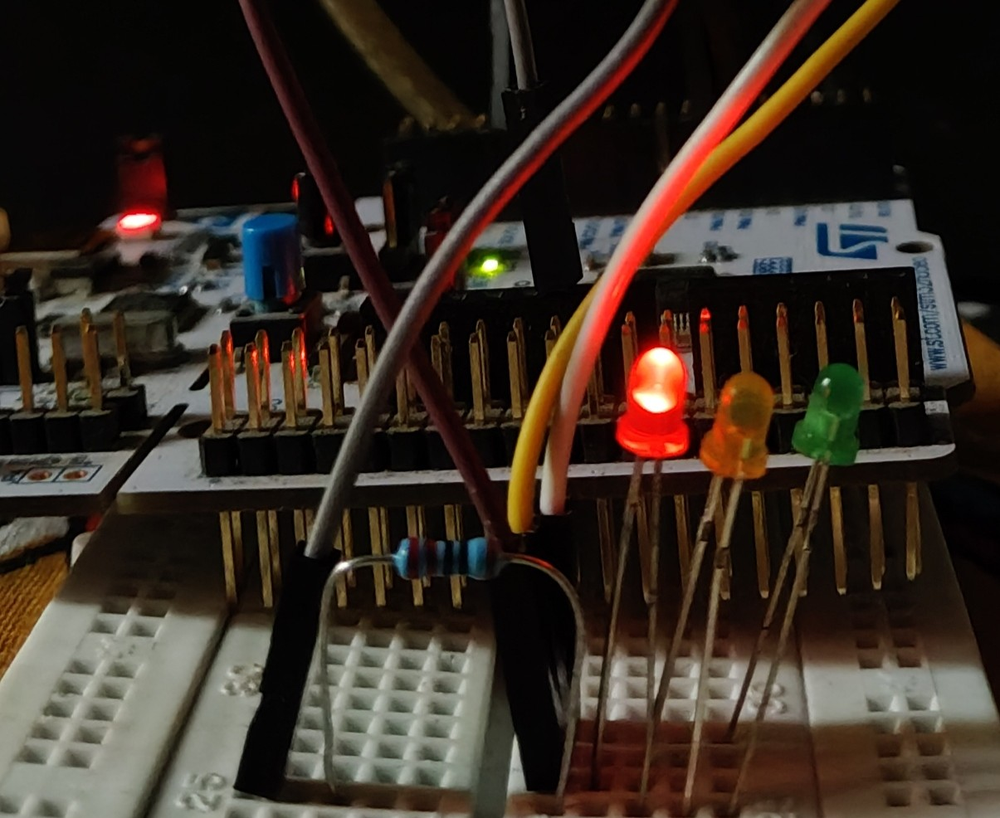
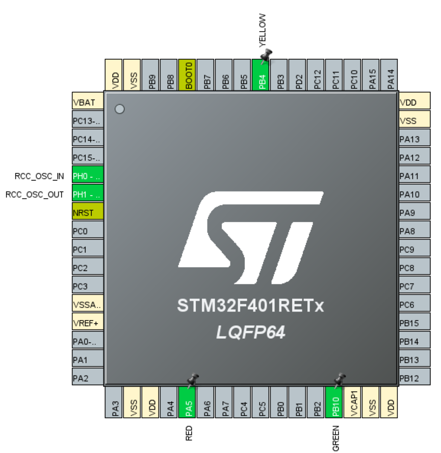

Traffic Light Controller (STM32)
Status: Completed✅



Project Overview
This project implements a basic traffic light control sequence using the
STM32 Nucleo-F401RE microcontroller. Three LEDs (Red, Yellow, Green)
are controlled using GPIO pins and timer-based delays to simulate
real-world traffic signal timing.
Features
- Red → Yellow → Green automatic switching
- Accurate time delays using HAL libraries
- Hands-on GPIO control experience
- Simple and beginner-friendly real-time project
Components Used
- STM32 Nucleo-F401RE Board
- 3 LEDs (Red, Yellow, Green)
- 3 × 220Ω resistors
- Breadboard and jumper wires
- USB cable for power + programming
Learning Outcomes
- STM32CubeMX for pin initialization
- HAL-based GPIO programming in C
- Understanding delays and timing control
- Basic embedded hardware interfacing